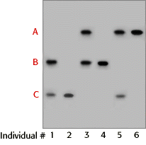

DNA Forensics Problem Set 1
Problem 5: VNTR: hypervariable regions
VNTR alleles are hypervariable regions of human DNA that differ from each other in:
Tutorial
VNTR stands for "variable number of tandem repeats"| A tandem repeat is a short sequence of DNA that is repeated in a head-to-tail fashion at a specific chromosomal locus. Tandem repeats are interspersed throughout the human genome. Some sequences are found at only one site -- a single locus -- in the human genome. For many tandem repeats, the number of repeated units vary between individuals. Such loci are termed VNTRs. One VNTR in humans is a 17 bp sequence of DNA repeated between 70 and 450 times in the genome. The total number of base pairs at this locus could vary from 1190 to 7650. |
| The most common forensic method to characterize VNTRs is using Southern hybridization as described for Problem 1. If the DNA flanking a VNTR is cut with a restriction endonuclease, the size of the resulting DNA fragment can vary, resulting in RFLPs, or "restriction fragment length polymorphisms." This is shown diagrammatically in the figure, where the red boxes represent the repeat unit and the blue lollipops represent cut sites for a restriction endonuclease. In this diagram, only three different variants (alleles) are illustrated for the VNTR locus, but 50 or more different alleles are often found at human VNTR loci. |

|
Analysis of a VNTR locus by Southern hybridization most commonly results in a two-band pattern, comprised of a band inherited from each parent. A one-band pattern can occur if the size of the two parental bands are the same or nearly the same. For our simple example of three different alleles designated A, B, and C illustrated above, six unique DNA profiles are possible.
The possible genotypes are AA, BB, CC, AB, BC, and AC as shown in the diagram below. Each of these genotypes can be distinguished as a different 1- or 2-band pattern after Southern hybridization, as shown in the autoradiogram to the right. |
 |
DNA profiles vary from person to person
| When profiles from a single VNTR locus from unrelated individuals are compared, the profiles are normally different. However it is possible for two individuals to have the same profile at one or two loci by chance. But the chance of more than one person having the same DNA profile at 4, 5, or 6 different VNTR loci is extremely small. When DNA profiles are used for forensic purposes, 4-6 different VNTR loci are analyzed. |


The Biology Project
University of Arizona
Tuesday, August 20, 1996
Contact the Development Team
http://biology.arizona.edu
All contents copyright © 1996. All rights reserved.